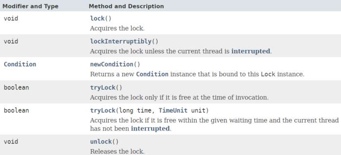
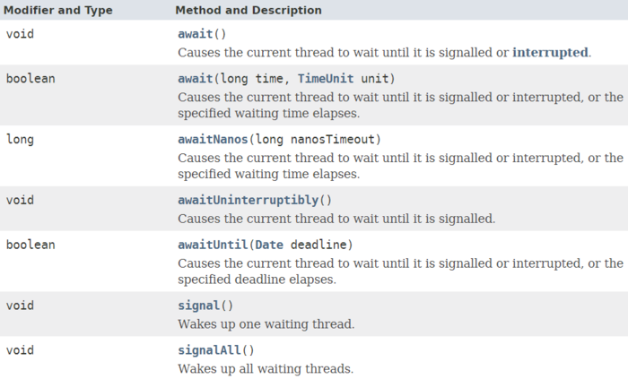
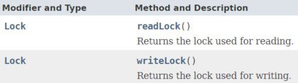

本系列文章中所说的juc-locks锁框架就是指java.util.concurrent.locks包，该包提供了一系列基础的锁工具，用以对synchronizd、wait、notify等进行补充、增强。
juc-locks锁框架中一共就三个接口：Lock、Condition、ReadWriteLock，接下来对这些接口作介绍，更详细的信息可以参考Oracle官方的文档。
Lock接口可以视为synchronized的增强版，提供了更灵活的功能。该接口提供了限时锁等待、锁中断、锁尝试等功能。
该接口的方法声明如下：

需要注意lock()和lockInterruptibly()这两个方法的区别：
lock()方法类似于使用synchronized关键字加锁，如果锁不可用，出于线程调度目的，将禁用当前线程，并且在获得锁之前，该线程将一直处于休眠状态。lockInterruptibly()方法顾名思义，就是如果锁不可用，那么当前正在等待的线程是可以被中断的，这比synchronized关键字更加灵活。
可以看到，Lock作为一种同步器，一般会用一个finally语句块确保锁最终会释放。
Lock lock = ...;
if (lock.tryLock()) {
try {
// manipulate protected state
} finally {
lock.unlock();
}
} else {
// perform alternative actions
}
Condition可以看做是Obejct类的wait()、notify()、notifyAll()方法的替代品，与Lock配合使用。
当线程执行condition对象的await方法时，当前线程会立即释放锁，并进入对象的等待区，等待其它线程唤醒或中断。
JUC在实现Conditon对象时，其实是通过实现AQS框架，来实现了一个Condition等待队列，这个在后面讲AQS框架时会详细介绍，目前只要了解Condition如何使用即可。

Oracle官方文档中给出了一个缓冲队列的示例：
假定有一个缓冲队列，支持 put 和 take 方法。如果试图在空队列中执行 take 操作，则线程将一直阻塞，直到队列中有可用元素；如果试图在满队列上执行 put 操作，则线程也将一直阻塞，直到队列不满。
class BoundedBuffer {
final Lock lock = new ReentrantLock();
final Condition notFull = lock.newCondition();
final Condition notEmpty = lock.newCondition();
final Object[] items = new Object[100];
int putptr, takeptr, count;
public void put(Object x) throws InterruptedException {
lock.lock();
try {
while (count == items.length) //防止虚假唤醒，Condition的await调用一般会放在一个循环判断中
notFull.await();
items[putptr] = x;
if (++putptr == items.length)
putptr = 0;
++count;
notEmpty.signal();
} finally {
lock.unlock();
}
}
public Object take() throws InterruptedException {
lock.lock();
try {
while (count == 0)
notEmpty.await();
Object x = items[takeptr];
if (++takeptr == items.length)
takeptr = 0;
--count;
notFull.signal();
return x;
} finally {
lock.unlock();
}
}
}
等待 Condition 时，为了防止发生“虚假唤醒”， Condition 一般都是在一个循环中被等待，并测试正被等待的状态声明，如上述代码注释部分。
虽然上面这个示例程序即使不用while，改用if判断也不会出现问题，但是最佳实践还是做while循环判断——Guarded Suspension模式，以防遗漏情况。
ReadWriteLock接口是一个单独的接口（未继承Lock接口），该接口提供了获取读锁和写锁的方法。
所谓读写锁，是一对相关的锁——读锁和写锁，读锁用于只读操作，写锁用于写入操作。读锁可以由多个线程同时保持，而写锁是独占的，只能由一个线程获取。

读写锁的阻塞情况如下图：
举个例子，假设我有一份共享数据——订单金额，大多数情况下，线程只会进行高频的数据访问（读取订单金额），数据修改（修改订单金额）的频率较低。
那么一般情况下，如果采用互斥锁，读/写和读/读都是互斥的，性能显然不如采用读写锁。
另外，由于读写锁本身的实现就远比独占锁复杂，因此，读写锁比较适用于以下情形：